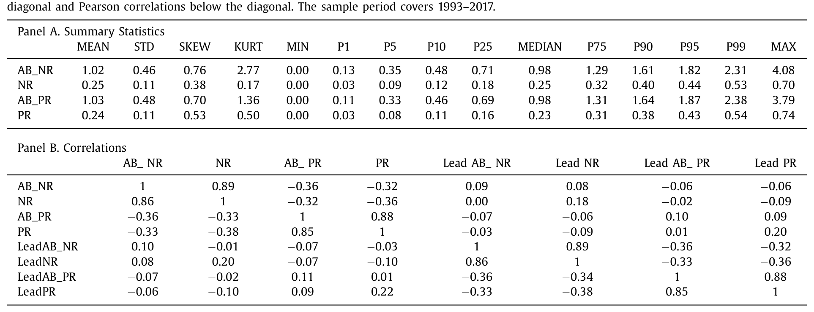
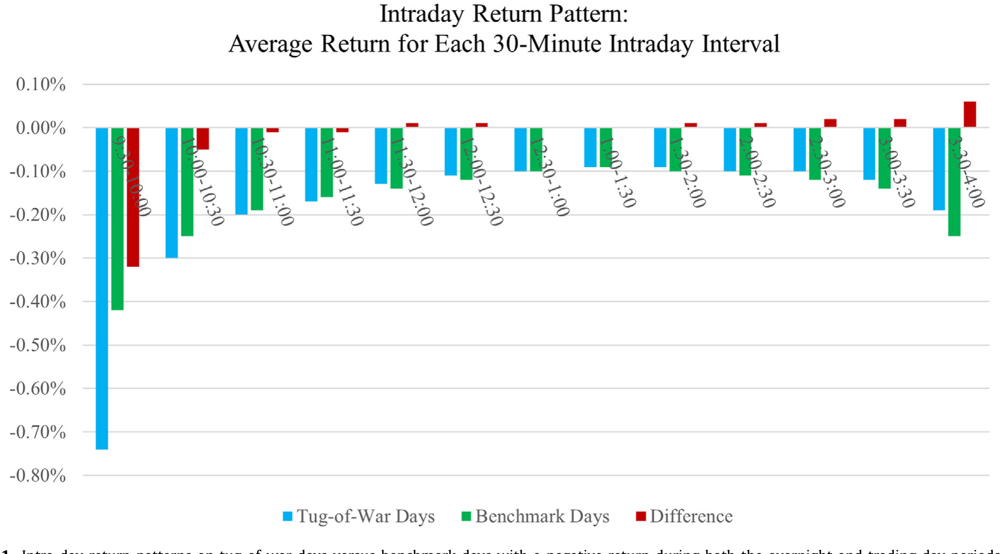
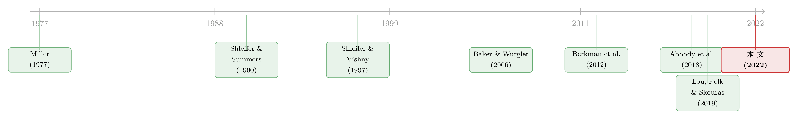

白天的「过度纠正」：当套利者在拔河里站错了队
本文读的是 Akbas, Boehmer, Jiang & Koch (2022, Journal of Financial Economics)：当一只股票在一个月里反复出现「隔夜上涨、白天回吐」的日内反转时，它下个月的收益反而更高——平均高出 0.92%。作者把这解读为白天套利者在一场旷日持久的「拔河」里过度纠正了隔夜的价格压力，结果把股票压成了低估。
1 一个反直觉的开场
先讲一个几乎所有人都接受的故事。
散户偏爱在夜里和开盘前下单——他们看到一条新闻、刷到一个名字、被某只股票吸引了注意力，于是挂上买单，把开盘价顶高。这些人，大体上就是噪声交易者 (noise traders)。而真正的机构、套利者 (arbitrageurs) 则在白天的连续交易时段里干活，他们盯着开盘那个「被顶高了」的价格，觉得不对，于是反向卖出，把价格在收盘前又拉回来。
于是你会看到一种反复出现的形态：隔夜上涨，白天回吐。Lou, Polk & Skouras (2019，下称 LPS) 把这种现象叫作一场每天上演的「拔河」(tug of war)——两拨偏好不同时段的投资者，各自往相反方向拉价格。
接着，一个自然的问题是：如果这场拔河在某只股票上打得格外凶——一个月里「隔夜涨、白天回吐」的天数特别多——那它对未来的价格意味着什么？
直觉会怎么回答？按 Miller (1977) 那套被讲了快五十年的逻辑：散户太乐观、又有卖空约束，价格被乐观者顶上去，所以越是被投机情绪推动的股票，未来收益越低。照这个静态故事，一场更激烈的拔河应该把股票推向高估，下个月理应跑输才对。
可本文的结论恰恰相反。于是反转出现了：拔河越激烈，下个月收益越高。这篇论文要解释的，就是这个「不该出现」的正号。
2 怎么度量一场拔河的激烈程度
要讲清楚这个反转，得先看作者怎么把「拔河」变成一个可计算的变量。
第一步，把每天的收益拆成两段。对股票 \(i\) 在第 \(d\) 天，白天的「开盘到收盘」(open-to-close) 收益定义为：
$$ RET\_OC_{id} = \frac{P^{close}_{id}}{P^{open}_{id}} - 1 $$
而前一夜的「收盘到开盘」(close-to-open) 隔夜收益没法直接观测，但可以用当日的「收盘到收盘」总收益 \(RET_{id}\) 反推出来。这一步是整套构造的心脏，我把它单独标注出来：
第二步，定义什么叫一次「反转」。一次负向日内反转 (negative daytime reversal)，指的是「正的隔夜收益 + 负的白天收益」——也就是夜里涨上去、白天又跌回来，对应一个偏高的开盘价。反过来，正向日内反转 (positive daytime reversal) 则是「负的隔夜 + 正的白天」，对应一个偏低的开盘价。
第三步，数天数。把一个月里负向（或正向）反转的天数除以当月总交易日，得到频率 \(NR_{it}\)（或 \(PR_{it}\)）。
但作者没有止步于此。真正关键的一步在于：他们不用频率的绝对水平，而用它的异常水平——把当月的 \(NR_{it}\) 除以该股过去 12 个月 \(NR\) 的均值，得到 AB_NR（异常负向反转频率），AB_PR 同理。
为什么要做这个「去趋势」？因为 LPS 已经证明，隔夜与白天的收益形态可以持续长达五年。如果一场拔河本就是某只股票的长期常态，那这种「正常的持续性」反而会盖住我们想找的那点短期信息。作者要捕捉的，是拔河突然变激烈的那些月份——只有这种异常的加剧，才对应套利者更可能「用力过猛」的时刻。

Table 1
从描述统计看，AB_NR 的均值接近 1（意味着典型月份的负向反转频率，大致等于它自己过去 12 个月的均值），但变异很大，从 0.00 一直到 4.08——也就是从「比常态少 100%」到「比常态多 408%」。而且这种异常强度本身是有持续性的：NR 与下月 LeadNR 的 Pearson 相关系数为 0.20，AB_NR 与 LeadAB_NR 的相关系数为 0.10，且这种持续性会随月份逐步衰减——拔河一旦加剧，会溢出到下个月，但不会持续太久。
3 那个不对称的核心发现
现在回到那个反转。主结果是这样的：
在月份 \(t\)，负向日内反转频率高的股票，在 \(t+1\) 月平均跑赢负向反转频率低的股票 0.92%。
但故事真正的「钩子」不在这个正号本身，而在它的不对称：
- 当反转是「高开盘价」（即
NR，隔夜涨、白天跌）时，预测力显著； - 当反转是「低开盘价」（即
PR，隔夜跌、白天涨）时，完全没有预测力。
为什么只有一边灵？作者的解释很巧妙，落在散户的卖空约束上。乐观的散户可以集体买入他们注意到的股票，把开盘价顶高；可悲观的散户没法卖空他们不持有的股票（Barber & Odean, 2008；Odean, 1999），而且隔夜做空又贵又有风险（Bogousslavsky, 2020）。于是：乐观的噪声只能往上推，悲观的噪声却推不动往下。
这种不对称带来一个连锁后果。正因为隔夜的上涨更可能掺着噪声，白天的套利者就更倾向于把「反复出现的隔夜上涨」一律归因于散户的瞎乐观，而不去认真分辨其中可能藏着的真信息。结果，他们对正向隔夜收益的纠正常常用力过猛——这就是全文的核心假说：过度纠正 (overcorrection)。
关键直觉：股价的隔夜上涨里，有一部分是噪声（该被纠正），也有一部分是真信息（不该被纠正）。套利者在一场激烈的拔河里，倾向于把两者一锅端地往下压，于是把本不该跌的那部分也压了下去，股票被打成低估，下个月自然反弹。
第二个支持性发现：这 0.92% 几乎全部来自对冲组合的多头腿（被低估、该涨的那批股票），而非空头腿。这正符合「过度纠正→低估→未来高收益」的逻辑——拔河不激烈时，套利者不会过度纠正，预测力也就更弱。
第三个发现是一记漂亮的安慰剂检验 (placebo test)：作者反过来看「白天先跌、隔夜再涨」这种反方向的序列。这种序列和「套利者回应隔夜上涨」的故事毫无关系，因此理应没有预测力——结果正是如此。这一步把「方向」钉死了：只有「套利者回应正向隔夜收益」这一条序列才带来预测力，反过来不行。
4 把「过度纠正」一层层验出来
一个假说光有正号还不够。本文最见功力的地方，是它没有停在收益预测，而是顺着「过度纠正」这条线，把整个机制一环一环地验了下去。
首先，看交易者身份。如果激烈的拔河真是「散户买 + 套利者空」的对撞，那这两种行为应该同时出现。作者确实发现：高频的「隔夜涨、白天回吐」月份，既伴随更多的散户买入，也伴随更高的卖空。
接着，看日内的时间路径。Bogousslavsky (2020) 指出，借券费和隔夜风险会促使套利者在收盘前平掉空头。那么如果套利者真的早早进场做空、又在尾盘收手，过度纠正（即那段负的白天收益）就应该主要发生在白天的较早时段。这正是图 1 想讲的事——在那些「隔夜涨、白天回吐」的 tug-of-war 日，平均的负向日内反转更多地集中在交易日的前半段。而且作者进一步发现：对那些尾盘把跌幅收窄了的股票（说明套利者尾盘收了手），预测力明显减弱。

Figure 1: Intra-day return patterns on tug-of-war days versus benchmark days with a negative return during both the overnight and trading day periods
然后，看横截面。如果过度纠正源于「难以分辨噪声与信息」，那它在更难分析、信息不确定性更高的股票上应该更强。结果也确实如此：小市值、高特质波动率、低流动性、低分析师覆盖的公司，效应更大（这些正是 Baker & Wurgler, 2006 笔下最易被投机噪声裹挟的票）。
再接着，看当期与基本面。过度纠正应该把当月收益压低——作者发现，高 AB_NR 的月份当期收益确实显著偏低。更有意思的是，这些股票在下一次盈余公告时往往伴随更大的盈余惊喜 (earnings surprise)——这说明套利者在激烈拔河中，真的忽视或低估了关于公司未来基本面的正面信息。配合 Thomson Reuters 的新闻数据，作者还发现这些 tug-of-war 日的新闻情绪在隔夜为正、在白天甚至更正——也就是说，白天的交易者无视了实实在在到来的好消息。
最后，看情绪周期。既然过度纠正靠的是「把隔夜上涨想当然地归为噪声」，那在市场情绪高涨期，这种想当然应该更严重。作者发现：预测力在高情绪期显著更强（与 Stambaugh, Yu & Yuan, 2012 的逻辑一致）。
至此，从交易者、日内路径、横截面、当期收益、基本面到情绪周期，六条证据全都指向同一个方向。论文的稳健性也做得很足：调整风险的多种方法、不同控制变量、不同样本期与交易所、剔除盈余公告月、组合形成与持有之间跳过一个月，乃至一个用 1926–1962 年 NYSE 股票做的样本外检验，结论都站得住。
5 静态的 Miller，与动态的拔河
值得停下来想一想，本文为什么敢于和 Miller (1977) 唱反调。
Miller 的世界是静态的：存在卖空约束，套利者袖手旁观，价格被最乐观的人决定，于是投机股被高估、未来收益低。这套逻辑解释了一大批「投机股低收益」的异象。
但本文的世界是动态的。白天的套利者不是袖手旁观，而是日复一日地和主导隔夜的乐观噪声交易者对打。一连串「隔夜涨、白天回吐」并不意味着高估的累积，反而可能是反复的每日纠正（如 Berkman et al., 2012 和 LPS 所言）。在这个动态设定里，作者论证：更激烈的拔河会让套利者过度纠正隔夜价格压力——他们高估了隔夜上涨里的噪声成分，于是把股票打成了低估。
换句话说，同样面对卖空约束和乐观散户，静态视角看到的是「高估」，动态视角看到的是「矫枉过正后的低估」。这是本文在概念上最锋利的一刀。
6 文献脉络
把这篇论文放回它生长的那条线上看，会更清楚它的位置。
最上游，是关于噪声交易与有限套利的两块基石：Miller (1977) 的卖空约束—高估理论，Shleifer & Summers (1990) 的噪声交易者范式，以及 Shleifer & Vishny (1997) 的「套利的极限」——套利者本身受约束、甚至会偏离基本面。Baker & Wurgler (2006) 和 Stambaugh, Yu & Yuan (2012) 则把投资者情绪接进了横截面定价，告诉我们投机股的错误定价集中在高情绪期。

中游，是把一天切成隔夜与白天两段来看的那批工作。Berkman, Koch, Tuttle & Zhang (2012) 发现散户的隔夜买入会在开盘顶高价格、再被白天交易拉回。Aboody, Even-Tov, Lehavy & Trueman (2018) 把持续的隔夜收益与情绪型投资者的短期需求持续性联系起来。Lou, Polk & Skouras (2019) 则给出了「拔河」这个总框架——隔夜与白天形态的持续性，源于两拨投资者的长期对峙。Bogousslavsky (2020) 进一步刻画了套利者为何倾向于在尾盘平掉隔夜空头。
而本文的位置，是第一个把这场拔河的「激烈程度」与未来横截面收益连起来，并据此给出市场效率含义的工作。它既继承了「隔夜—白天」这条实证线，又用「动态过度纠正」翻新了 Miller 式的静态结论。
（关于散户究竟「栖息」在哪些股票、又如何被时段切分，可参见《散户的栖息地》 与《当散户「掉线」》。）
7 评论与延伸（Q&A + 研究方向）
(a) 几个可能的疑问
Q：这不就是又一个「反转」(reversal) 异象吗，和短期反转有什么区别？
不一样。短期反转刻画的是上月收益本身预测下月收益的负向关系；本文的
AB_NR度量的是「隔夜涨、白天回吐」这种日内序列出现的异常频率，而且它预测的是正收益。作者也控制了常见特征后效应依然存在。它捕捉的是一场拔河的激烈度，而非收益的简单均值回复。
Q：那 0.92% 会不会只是补偿了某种风险——比如「隔夜持仓风险」或「投资者分歧」？
作者专门排查过这些替代解释：\(t+1\) 月的高估、隔夜与白天两拨人「分歧」的风险溢价、以及做空噪声交易者或隔夜持仓的套利风险溢价。逐一检验下来，证据都与这些风险故事相悖，而更符合「白天套利者过度纠正」。
Q：为什么收益主要由 \(t+1\) 月的隔夜段、而不是白天段贡献？
因为被过度纠正、压成低估的，是隔夜被噪声顶高、又被白天「错杀」的那部分价值。当低估在下个月修复时，修复同样发生在隔夜段——这与「隔夜由信息/需求主导、白天由套利主导」的时段分工是自洽的。
Q：高开盘 (NR) 有效、低开盘 (PR) 无效，会不会只是统计噪声碰巧？
不太像。这个不对称有明确的微观结构理由——乐观散户能买、悲观散户不能卖空，所以隔夜的「往上推」比「往下压」更普遍、也更掺噪声。安慰剂检验（反方向的「白天跌、隔夜涨」序列无预测力）进一步把这条逻辑钉死。
Q：把套利者说成「会犯错、会过度纠正」，是不是有点诛心？毕竟他们通常被当作纠正错误定价的人。
这确实是本文最大胆之处。但作者援引了 Stein (2009)「老练投资者也会让价格偏离基本面」、以及 Hirshleifer, Levi, Lourie & Teoh (2019) 关于「压力下转向启发式决策」的证据。机制不是「套利者非理性」，而是「在持续拔河中，他们理性地少花精力去甄别隔夜上涨的信息含量」，从而系统性地矮化了真信息。
Q：这个效应在今天还在吗？高频做市和零佣金散户大潮会不会改变它？
论文样本止于 2017 年 12 月，并用 1926–1962 的样本外检验佐证了稳健性，说明它不是单一时代的产物。但 2019 年后散户结构与日内微观结构都变了——效应是否依旧、方向是否改变，是个开放的实证问题。
(b) 几个可能的研究问题与提案
1. 把「拔河」搬进公司债市场。 【经济故事】公司债同样有「散户/经纪商隔夜挂单 vs. 机构白天做市」的时段分工，而信用市场的卖空约束远比股票更紧——若「乐观推得动、悲观推不动」的不对称在信用市场更极端，过度纠正可能更强。 【可行性】中。需要 TRACE 的日内逐笔成交来构造隔夜/白天分段，但公司债成交稀疏、且很多债没有连续的开盘/收盘价，识别会受限于流动性最好的那批券。
2. 外资持有人是「隔夜俱乐部」还是「白天俱乐部」？
【经济故事】不同时区的外国投资者，其下单时间天然偏离美东交易时段，可能系统性地落在隔夜段，从而改变某只股票拔河的「人员构成」与激烈度。
【可行性】中。需把 13F/国际持仓数据与日内收益分段匹配，识别外资持股比例对 AB_NR 预测力的横截面调节作用；难点是把「持有人时区」与「实际下单时段」对上。
3. 流动性供给者的尾盘行为，能否直接观测？ 【经济故事】本文用「尾盘跌幅是否收窄」间接推断套利者尾盘平仓。若能用做市商持仓或卖空回补的日内数据直接验证，机制就从「推断」变成「证据」。 【可行性】中偏低。需要带交易者标识的日内卖空/持仓数据（如监管数据或券商内部数据），获取难度高，但一旦拿到，识别力很强。
4. 高情绪期的「过度纠正」是否可被交易？
【经济故事】既然效应在高情绪期显著更强，一个条件化于市场情绪的多空策略，理论上能放大 0.92%。
【可行性】高。数据现成（CRSP + Baker-Wurgler 情绪指数），可直接做条件化组合排序与交易成本核算；真正的考验是扣除冲击成本后，小市值多头腿是否还剩下可观的净收益。
8 我的判断与参考文献
这篇论文最大的贡献，是把一个被讲滥了的故事（卖空约束→投机股高估→低收益）在动态框架里翻了过来，并且没有止步于一个漂亮的正号，而是用六条相互独立、方向一致的证据把「过度纠正」这个机制夯实。尤其是「高开盘有效、低开盘无效」的不对称，以及反方向序列的安慰剂检验，让我对它的因果叙事比一般的横截面异象更信服。
但我对识别仍有两点担忧。其一，效应集中在小市值、低流动性、低分析师覆盖的股票上——这恰恰是交易成本最高、也最容易藏着各种遗漏特征的角落，0.92% 在扣除现实冲击成本后还剩多少，是个绕不开的问题。其二，「套利者过度纠正」终究是一个推断出来的机制：作者没有直接观测到某个具体套利者「先做空、后收手、且没去读新闻」，而是用日内路径、卖空总量、新闻情绪等聚合证据拼出来的。把这条链条用带交易者标识的微观数据直接验出来，是我最想看到的后续。
如果让我提一个最想看的下一步：把这套「拔河强度」指标移植到信用市场与外资持有人的交叉处——那里卖空更难、时段分工更明显，过度纠正若真存在，应该会留下更清晰的指纹。
参考文献
- Aboody, D., Even-Tov, O., Lehavy, R., Trueman, B. (2018). Overnight Returns and Firm-Specific Investor Sentiment.
- Akbas, F., Boehmer, E., Jiang, C., Koch, P. D. (2022). Overnight returns, daytime reversals, and future stock returns. Journal of Financial Economics 145(3), 850–875.
- Baker, M., Wurgler, J. (2006). Investor sentiment and the cross-section of stock returns. Journal of Finance 61(4), 1645–1680.
- Barber, B., Odean, T. (2008). All that glitters: the effect of attention and news on the buying behavior of individual and institutional investors. Review of Financial Studies 21(2), 785–818.
- Berkman, H., Koch, P., Tuttle, L., Zhang, Y. (2012). Paying attention: overnight returns and the hidden cost of buying at the open. Journal of Financial and Quantitative Analysis 47(4), 715–741.
- Lou, D., Polk, C., Skouras, S. (2019). A tug of war: overnight versus intraday expected returns. Journal of Financial Economics 134(1), 192–213.
- Miller, E. (1977). Risk, uncertainty, and divergence of opinion. Journal of Finance 32(4), 1151–1168.
- Odean, T. (1999). Do investors trade too much? American Economic Review 89(5), 1279–1298.
- Shleifer, A., Summers, L. (1990). The noise trader approach to finance. Journal of Economic Perspectives 4(2), 19–33.
- Shleifer, A., Vishny, R. (1997). The limits of arbitrage. Journal of Finance 52(1), 35–55.
- Stambaugh, R., Yu, J., Yuan, Y. (2012). The short of it: investor sentiment and anomalies. Journal of Financial Economics 104(2), 288–302.
- Stein, J. (2009). Presidential address: sophisticated investors and market efficiency. Journal of Finance 64(4), 1517–1548.